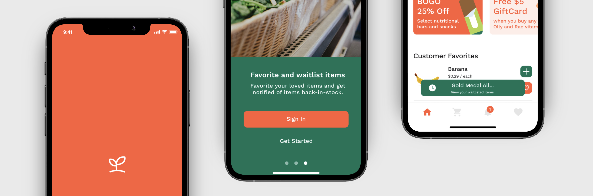
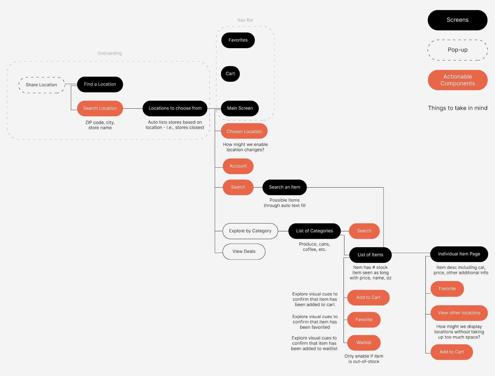

Grocery Grab
In lieu of the recent events of COVID-19 and its effects with the grocery shopping experience, I crafted the app ‘Grocery Grab’ to help resolve the lack of transparency of currently stocked or out-of-stock items.Role
Product Designer
Tools
Adobe DrawAdobe Illustrator
Figma
Timeline
1 month, Apr to May 2020

Project Overview
The Problem
How might we resolve the lack of transparency to items that are currently in-stock and out-of-stock?
The Solution
Grocery Grab — a mobile app to ensure people’s grocery shopping experience through stock transparency.
01 Identifying the Problem
How might we resolve the lack of transparency to items that are currently in-stock and out-of-stock?
At the peak of COVID-19, we’ve all seen the scenes of anxious customers wiping through grocery aisles. With this huge demand of items, many customers walked into stores with aisles empty, and others even coming into the store the next week to still find their item out-of-stock.
With my observations from peers, I wanted to explore deeper in what deterred their grocery shopping experience. Therefore, my research goal was to observe the contrasts of the grocery process from before verus after the stay-at-home.
With my observations from peers, I wanted to explore deeper in what deterred their grocery shopping experience. Therefore, my research goal was to observe the contrasts of the grocery process from before verus after the stay-at-home.

A common problem that people faced was the lack of transparency.
From the user interviews, when it came to some specific items - such as the brand name, people found those shelf locations to be empty so they had to either settle for another ‘lesser’ quality or brand, or aim to retrieve their item at another location, which in most cases, ended up not having the item available.
02 Ideation
Note the store's current inventory to ensure customer's search for items; be transparent about items restocked.
Building off of my findings from the initial research as well as brainstorming possible solutions, I decided to note the store's current inventory to ensure customer's search for items; be transparent about items restocked.
01 For people to ensure that they could obtain the item, there would be a clear indication of the item in stock, through visible inventory.
02 To take note of items that were in-stock, low-in-stock, or out-of-stock, there would be visual cues such as color and icon.
03 In the event that an item was out of stock, people were able to waitlist items to get notified of a recurring shipment.
01 For people to ensure that they could obtain the item, there would be a clear indication of the item in stock, through visible inventory.
02 To take note of items that were in-stock, low-in-stock, or out-of-stock, there would be visual cues such as color and icon.
03 In the event that an item was out of stock, people were able to waitlist items to get notified of a recurring shipment.
Information architecture to note user flows and essential components and screens prior to initial sketching and mockups.
This helped me visualize the specific actions a user would take to utilize a certain feature as well as how the app would look structurally. Additionally, I noted questions and additional information to take in mind when creating layouts.

03 Iterations on Iterations
From user testings, I was able to build and improve upon the issues previously experienced.

04 Branding
Designing "freshness".
To reflect the fresh and vibrant colors of produce, I used orange and green as my central colors. Orange reminded me of fresh and juicy fruit; green resonated with fresh greens such as lettuce, spinach, etc.
In regards to the elements such as buttons and pop-up screens, I used curved edges with a radius of 10 to reflect a welcoming, friendly, and transparent branding.
In regards to the elements such as buttons and pop-up screens, I used curved edges with a radius of 10 to reflect a welcoming, friendly, and transparent branding.

05 Final Deliverables
Value points of app presented once app is opened.

Choose the store that works best for you.

Get notified of store notifications and restocked items.

Check inventory of other locations.

Add items to waitlist and get notified when restocked.

Specify your search with filters.

Quickly add/remove items in your cart.

Learnings and Takeaways
This was my first project where I created an entirely new app, without redesigning a current one. Definitely ran into many reiterations and epiphanies, venturing into a range design possibilities! I really aimed to provide an app that could work across generational gaps - users who are in college or just got out of college, parents, seniors, etc. - in hopes to make this grocery shopping experience accessible and inclusive to a range of people.
Next Steps
Extend screens to beyond the check-out screen to note alternative ways to retrieve items.
Exploring and researching potential ways to check-out and retrieve grocery items - drive and pick up, pick up, delivery, etc.
Backend screens to enable stores to input their own data.
Stores could update stocks, messages, etc. all through one app - mobile or desktop. Explore more how the CMS (content management system) would look like for employees — How would onboarding look like? How might they update stocks or messages in their particular store?
Further explore edge cases.
How might we compare store prices if one item is out of stock? What if someone needs an item but it’s waitlisted and they aren’t able to go to another store?
Exploring and researching potential ways to check-out and retrieve grocery items - drive and pick up, pick up, delivery, etc.
Backend screens to enable stores to input their own data.
Stores could update stocks, messages, etc. all through one app - mobile or desktop. Explore more how the CMS (content management system) would look like for employees — How would onboarding look like? How might they update stocks or messages in their particular store?
Further explore edge cases.
How might we compare store prices if one item is out of stock? What if someone needs an item but it’s waitlisted and they aren’t able to go to another store?